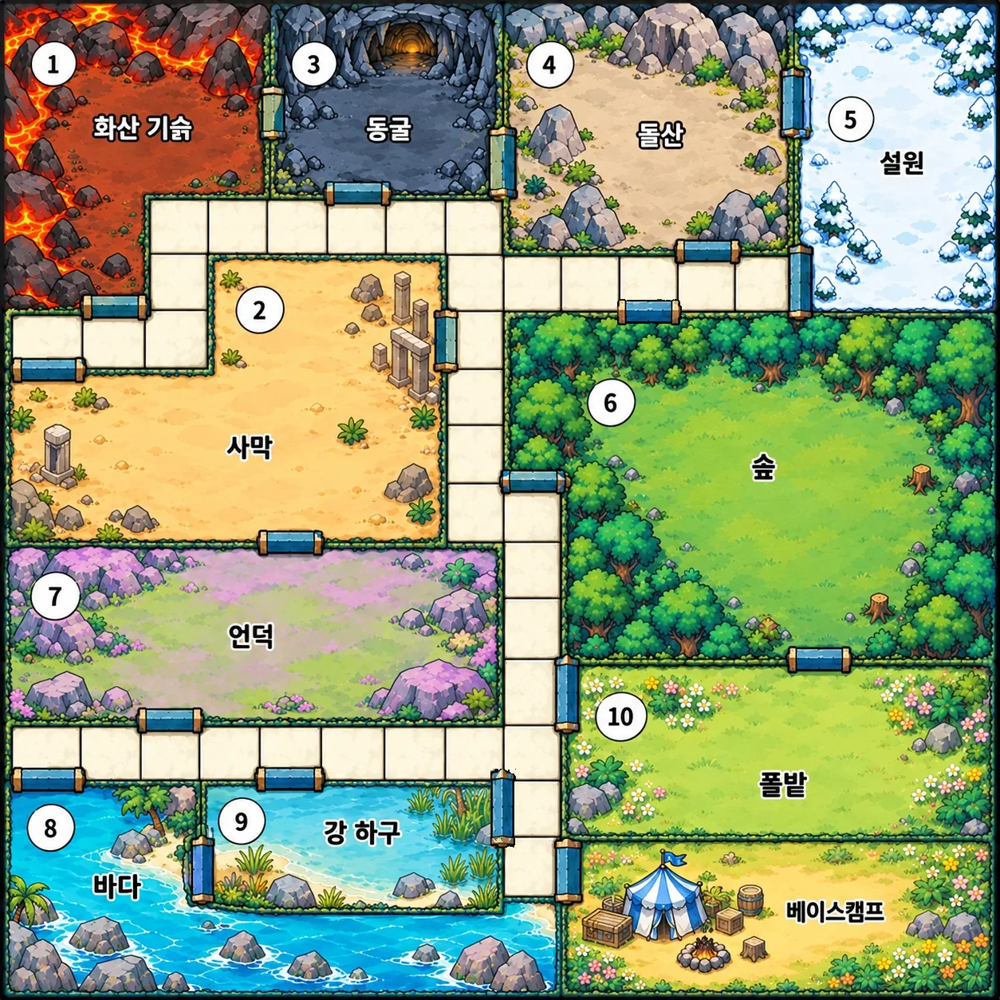
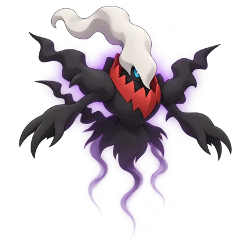

빛나는 칸을 눌러 이동 · 파란 문은 옆 지역으로 가는 지름길
출현 카드
주사위
구조 
파트너를 고르고 준비 버튼을 눌러 주세요
기라티나가 폭주했어요! 아르세우스가 남긴 봉인조각 8개를 모아 평온을 되찾아 주세요.
1~6명 · 추천 3~4명 · 학생마다 다른 파트너를 골라요. 학생들은 QR이나 방 번호로 참가하고, 모두 준비하면 선생님이 탐사를 시작해 주세요.

빛나는 칸을 눌러 이동 · 파란 문은 옆 지역으로 가는 지름길
구조 